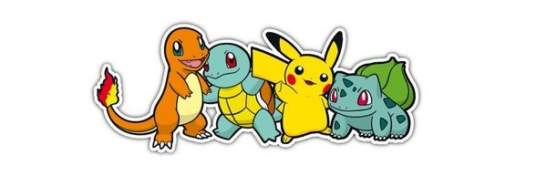

Вымышленная вселенная «Покемона» выполнена в антураже альтернативной современности, но в этом мире живут особые существа покемоны. Покемоны в меру разумны, некоторые умеют разговаривать. Они бывают разных видов и обладают сверхъестественными способностями.

От типа покемона зависит то, способности какой стихии присутствуют у него, а также то, против атак какого типа он устойчив или слаб. Если покемон побеждает в битве, он получает опыт, при достижении определённого количества опыта у него повышается уровень, а значит, и характеристики. При определённых условиях покемон может эволюционировать; преобразовываться в развитую форму, которая сильнее предыдущей.